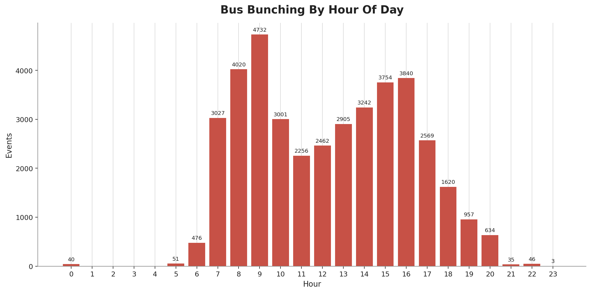
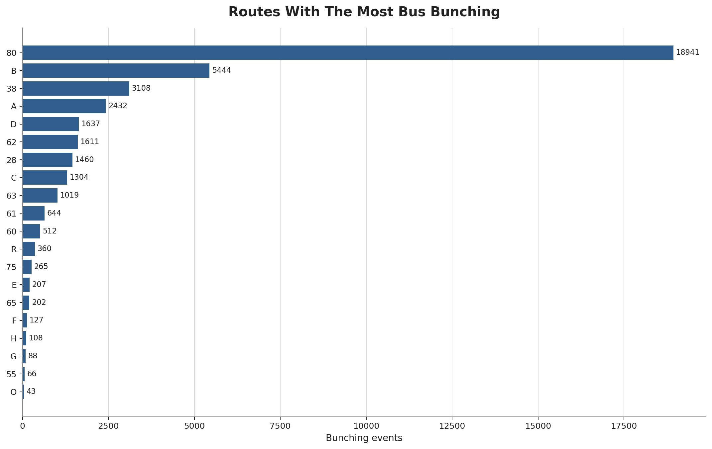
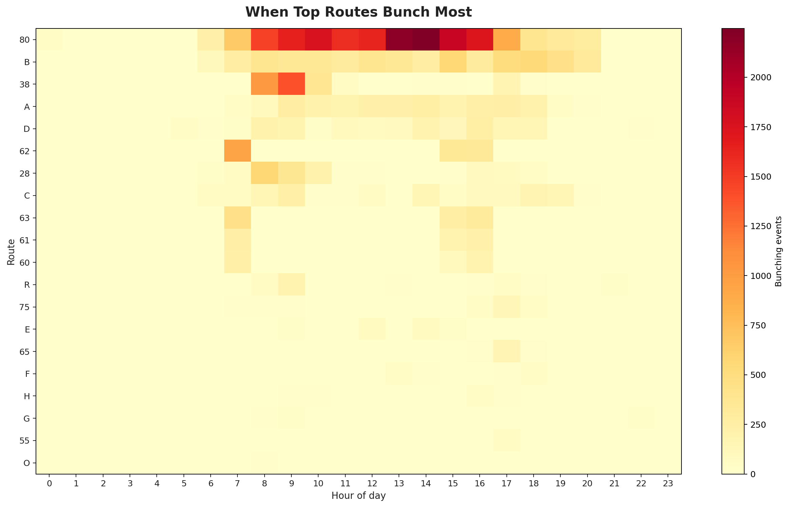
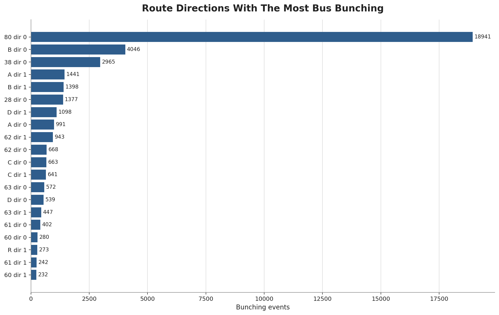
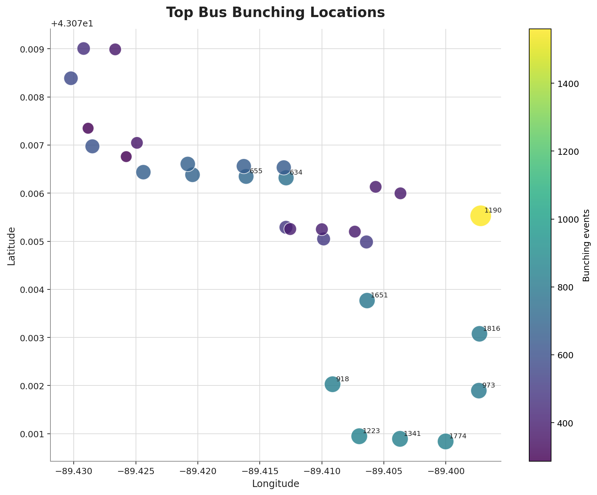
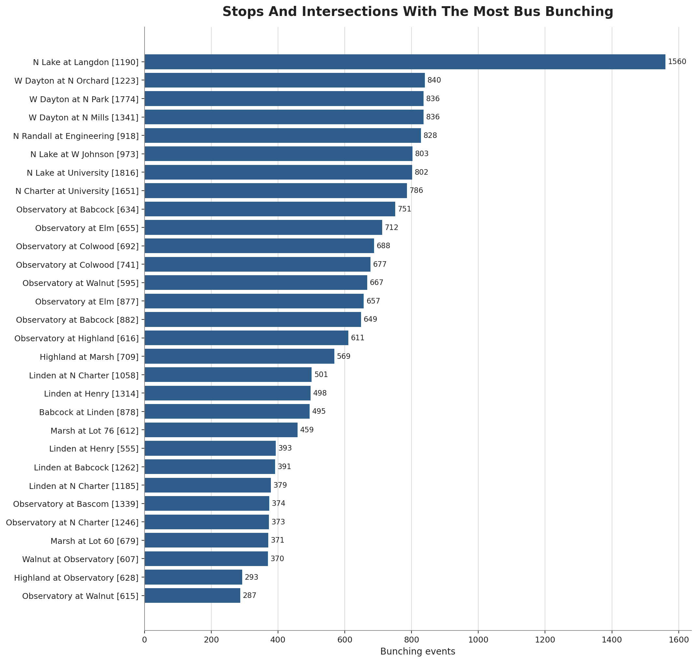

Status
Observed patterns
Active partner
Service routes
29
GTFS routes in the local feed
Stop-level observations
39,670
2026-09-09 to 2026-09-19
Stops affected
904
24 routes affected
What The Current Observations Show
Patterns concentrate by route, hour, and repeated stop locations.
Top route: 80. Busiest hour: 09:00.
Weather Context
Latest observed
Sep 22, 2026 at 10:00 PM CT
Clear, Sunny
Temperature
54.0 F
Observed
Wind
9.2 mph
Observed
Weather is context for interpretation, not a causal finding.
Forecast
| Time | Temp | Wind | Conditions |
|---|---|---|---|
| Sep 22, 2026 at 10:00 PM CT | 54.0 F | 9.2 mph | Clear, Sunny |
| Sep 22, 2026 at 11:00 PM CT | 53.6 F | 10.4 mph | Clear, Sunny |
| Sep 23, 2026 at 12:00 AM CT | 53.2 F | 9.9 mph | Clear, Sunny |
| Sep 23, 2026 at 1:00 AM CT | 52.6 F | 8.8 mph | Clear, Sunny |
| Sep 23, 2026 at 2:00 AM CT | 52.7 F | 8.8 mph | Clear, Sunny |
| Sep 23, 2026 at 3:00 AM CT | 52.3 F | 8.5 mph | Clear, Sunny |
Prediction Element
Recurring-risk ranking based on the Madison observations already collected.
Use as a prioritization screen. It does not predict a specific bus will bunch.
Tomorrow: likely recurring risk windows
| Day | Route | Hour | Likely location | Historical observations | Basis |
|---|---|---|---|---|---|
| Thu Sep 24 | 80 | 13:00 | N Lake at Langdon [1190] | 581 | Same weekday history (Thursday) |
| Thu Sep 24 | 80 | 14:00 | N Lake at Langdon [1190] | 576 | Same weekday history (Thursday) |
| Thu Sep 24 | 80 | 16:00 | N Lake at Langdon [1190] | 539 | Same weekday history (Thursday) |
| Thu Sep 24 | 80 | 09:00 | N Lake at Langdon [1190] | 518 | Same weekday history (Thursday) |
| Thu Sep 24 | 80 | 11:00 | N Lake at Langdon [1190] | 512 | Same weekday history (Thursday) |
| Thu Sep 24 | 80 | 15:00 | N Lake at Langdon [1190] | 504 | Same weekday history (Thursday) |
Rest of week: likely recurring risk windows
| Day | Route | Hour | Likely location | Historical observations | Basis |
|---|---|---|---|---|---|
| Thu Sep 24 | 80 | 13:00 | N Lake at Langdon [1190] | 581 | Same weekday history (Thursday) |
| Thu Sep 24 | 80 | 14:00 | N Lake at Langdon [1190] | 576 | Same weekday history (Thursday) |
| Fri Sep 25 | 80 | 10:00 | N Lake at Langdon [1190] | 725 | Same weekday history (Friday) |
| Fri Sep 25 | 80 | 14:00 | N Lake at Langdon [1190] | 618 | Same weekday history (Friday) |
| Sat Sep 26 | A | 09:00 | Blair [2850] | 248 | Same weekday history (Saturday) |
| Sat Sep 26 | B | 15:00 | Troy at Lerdahl [1294] | 243 | Same weekday history (Saturday) |
| Sun Sep 27 | C | 19:00 | University at N Breese [1624] | 99 | Same weekday history (Sunday) |
| Sun Sep 27 | 80 | 00:00 | Observatory at Bascom [1339] | 40 | Same weekday history (Sunday) |
Daily observations
Bunching by hour

Generated from the event export.
Top routes

Route-hour heatmap

Top route-directions

Highest date-hour windows
| Date | Hour | Routes | Observations |
|---|---|---|---|
| 2026-09-10 | 09:00 | 11 | 835 |
| 2026-09-15 | 09:00 | 8 | 763 |
| 2026-09-10 | 08:00 | 10 | 699 |
| 2026-09-16 | 08:00 | 10 | 696 |
| 2026-09-10 | 07:00 | 10 | 663 |
| 2026-09-15 | 08:00 | 9 | 613 |
| 2026-09-14 | 09:00 | 8 | 611 |
| 2026-09-18 | 15:00 | 9 | 603 |
| 2026-09-16 | 09:00 | 8 | 578 |
| 2026-09-18 | 10:00 | 5 | 564 |
Top stop location map

Static map from the generated visuals output.
Open interactive mapTop stops

Top routes: where and when
| Route | Observations | Top stop | At stop | Top hour | At hour |
|---|---|---|---|---|---|
| 80 | 18,941 | N Lake at Langdon | 1,560 | 14:00 | 2,246 |
| B | 5,444 | Knutson at Westport | 259 | 15:00 | 554 |
| 38 | 3,108 | Observatory at Colwood | 153 | 09:00 | 1,391 |
| A | 2,432 | High Point | 100 | 09:00 | 280 |
| D | 1,637 | W Johnson at N Frances | 70 | 16:00 | 250 |
| 62 | 1,611 | S Gammon at Schroeder | 181 | 07:00 | 943 |
| 28 | 1,460 | Observatory at Colwood | 70 | 08:00 | 567 |
| C | 1,304 | University at N Breese | 31 | 09:00 | 234 |
Top stop locations
| Stop | Stop ID | Routes affected | Observations |
|---|---|---|---|
| N Lake at Langdon | 1190 | 1 | 1,560 |
| W Dayton at N Orchard | 1223 | 1 | 840 |
| W Dayton at N Park | 1774 | 1 | 836 |
| W Dayton at N Mills | 1341 | 2 | 836 |
| N Randall at Engineering | 918 | 2 | 828 |
| N Lake at W Johnson | 973 | 1 | 803 |
| N Lake at University | 1816 | 1 | 802 |
| N Charter at University | 1651 | 4 | 786 |
| Observatory at Babcock | 634 | 4 | 751 |
| Observatory at Elm | 655 | 4 | 712 |